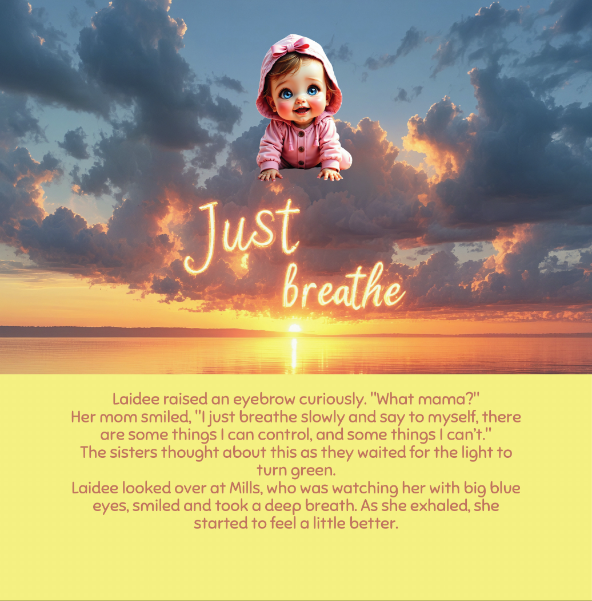
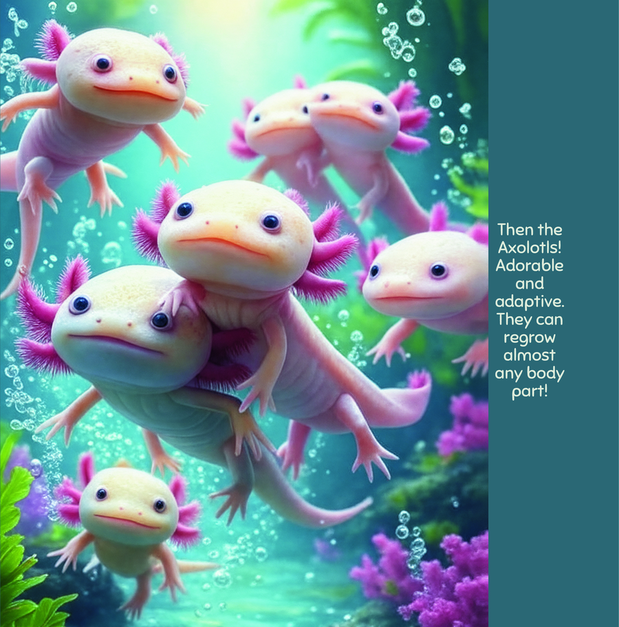

🧭 Meet the Creatures
Amazing Animals Your Kids Will Discover
Aquariums are like portals to another world. Before your visit, read up on these incredible creatures with your child. It makes the real encounter even more magical and memorable! Sharks, dolphins, jellyfish, sea otters, and so much more await your little one behind every exhibit.
🦈 Sharks!

🐠 Tropical Fish

🪸 Jellyfish